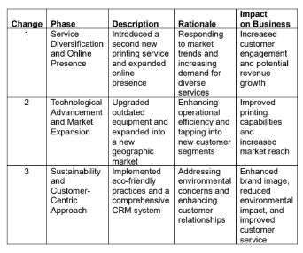

Request Change Form
Date: [Date]
Name: Catherine May Casyao, Clarence Bermal
Section:BSIS 3A
Cathrince Printing Shop
(Organization Name)
Requester Information:
Name: [Requester’s Full Name]
Position/Role: [Requester’s Position or Role]
Contact Information: [Email/Phone]
Change Details:
Change Title/Description: [Brief title or description of the change]
Change Type: [e.g., Equipment Upgrade, Workflow Automation, etc.]
Rationale/Justification: [Explain why the change is necessary and its expected benefits]
Scope of Change:
Affected Area/Process: [Specify the department, system, or process impacted by the change]
Dependencies:[List any dependencies, if known]
Implementation Plan:
Timeline: [Proposed start and end dates for implementation]
Resources Required: [Specify any resources, such as budget, personnel, or technology]
Risk Assessment:
Potential Risks: [Identify potential risks associated with the change]
Mitigation Plan: [Provide strategies to mitigate identified risks]
Approval:
Requested Approval Date: [Date by which approval is needed]
Approval Signatures:[Space for signatures of approving authorities]
Review and Approval:
Reviewer/Approver Date: [Name/Position] [Date]
Reviewed DecisionComments:
[Approve/Reject] [Any comments or notes]
Implementation Status:
Current Status:[e.g., Pending Approval, Approved, In Progress, Completed]
Implementation Notes:[Updates on the progress of the change]
Architecture Requirements Phase
Enterprise Architecture
Name:Catherine May Casyao, Clarence Bermal
Section: BSIS 3A
Cathrince Printing Shop
(Organization Name)

|